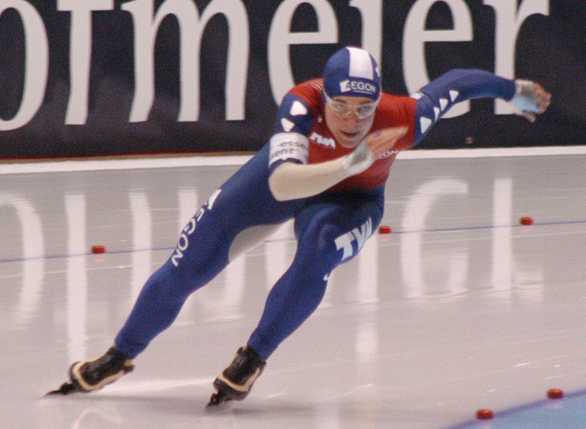

My Current Favorite Sport, Speed Skating
Types of Ice Skating
Differences
Each one in their own does use ice skating as the basis of their sport duh, but each one uses it differently. Take Fen Skating for example, its the most traditional out of the listed above, dating back to the medieval times. Fen Skating, instead of using a rink or designated area for skating, used the towns it was played in as the skating ring. The cities in which Fen Skating was popular, got so cold that they could literally skate on the ground. Of course, it didn't hurt that where Fen Skating was popular, the lands were flat.
Speed Skating
Speed Skating just slightly more modern than Fen Skating focuses more on speed than having fun. So now you can call people faster than you at skating Try Hards. This sport is purely competitive, prioritizing speed more than anything. Sometimes, people can reach up to 60 MPH, thats the average speed of your grandmother driving on I-64. That poor poor grandmother... Hope she took her pills today.

Could you imagine that? imagine traveling 60 MPH, with no car, no bike no nothing. No protection, only you, a very tight spandex and courage. For reference the average human runs at ~7 MPH that means that those people speed skating are going about 10X as fast as you running. Now I don't know about you, I wouldn't be able to do it. I mean I can barely skate normally let alone on ice that fast. Thankfully, there are a few things you could do If you're a maniac who decides to ice skate... fast to not fall on your bum whenever you decide to give change a french kiss, and thehse thigns can be boiled down to a few simple steps
Here they are in all their glory:
- Position yourself
- Push
- Bend Knees
- Don't Fall
- Repeat
Why I like Speed Skating
Even though speed skating is something I never really thought about until exactly 2 days ago, it will always hold a special place in whatever the beating thing in my chest is.
- Its an adrenaline junkie magnet
- The sole purpose is to go fast
- It requires an incredible amount of skill
- Quite of bit of money in the industry